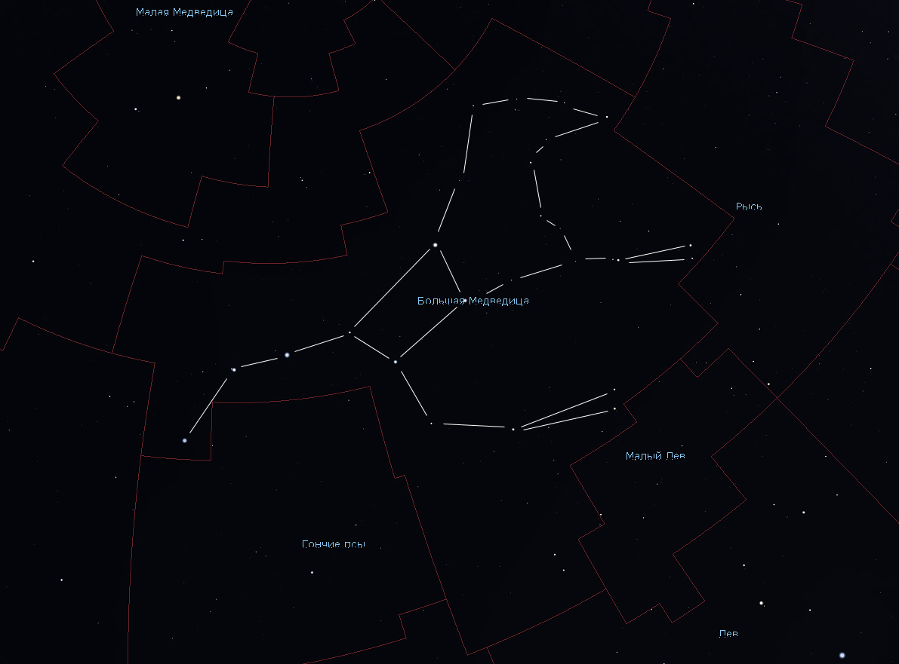
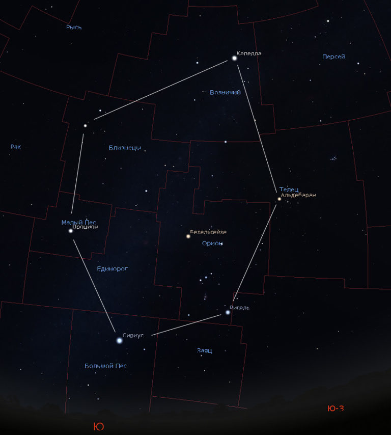

Если коротко, то астеризм — это легко узнаваемая группа звезд, являющаяся либо частью какого-либо созвездия, либо объединяющая в себе звезды из нескольких созвездий. Астеризмы, как и созвездия, имеют собственные названия.
Давайте разберем на примерах.
Самый известный астеризм на нашем небе — это Большой Ковш. Это семизвездие является не отдельным созвездием «Ковша», а наиболее заметной и узнаваемой частью (но только частью!) гораздо более обширного созвездия Большой Медведицы. Таким образом, все звезды ковша принадлежат одному созвездию, но не описывают созвездие полностью.
А вот другой пример: астеризм Зимний шестиугольник (или Зимний круг). Эта огромная фигура объединяет шесть ярких звезд, принадлежащих шести разным созвездиям.
Астеризмы бывают не только большие, видимые невооруженным глазом, но и крошечные, заметные только в бинокль или телескоп. Самый известный из подобных астеризмов — Вешалка в созвездии Лисички. Другой известный телескопический астеризм — Бриллиантовое кольцо в созвездии Малой Медведицы, в состав которого входит, кстати, знаменитая Полярная звезда!
Астеризмы играют примерно такую же роль в астрономии, что и исторически сложившиеся области в географии. Например, в Москве есть исторически сложившиеся районы (Хамовники, Арбат и так далее), а есть административные округа (например, Центральный административный округ). Так вот созвездия выполняют роль округов, поскольку у них есть четкие границы, а астеризмы — роль исторических районов. (Аналог большого астеризма в географии — Зауралье.)
В древности понятия астеризм (лат. asterism) и созвездие (лат. constellatio) означали, фактически, одно и то же. (Кстати, термин созвездие появился в средние века.) До начала XIX века под созвездиями понимались не области неба, а просто запоминающиеся группы звёзд, которые нередко накладывались друг на друга. При этом получалось, что некоторые звёзды принадлежали сразу двум созвездиям, а некоторые бедные звездами области неба вообще не относились к какому-либо созвездию. Порядок был наведен в 1922 году, когда астрономы установили четкие границы для всех созвездий, определив раз и навсегда их количество — 88. Поэтому сегодня созвездия — это не звездные рисунки, а участки неба, имеющие строго определенные границы.
А вот звездные рисунки — Летний треугольник, Серп, Северный крест, Плеяды, Фальшивый крест и так далее — стали называться астеризмами.